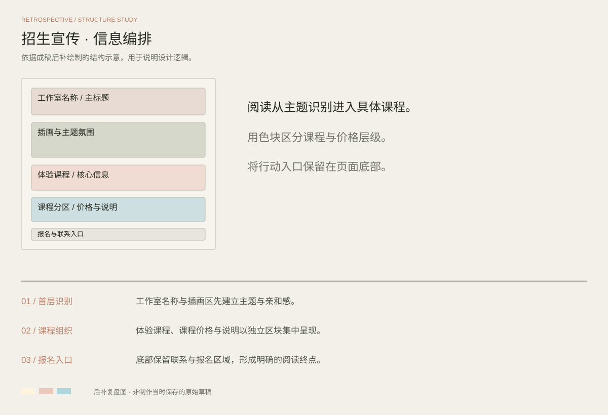

PROJECT 06 / PROMOTIONAL DESIGN
把美学，带进日常
野人美学工作室 · 招生宣传
以柔和配色与插画元素建立亲和感，并用清晰的区块组织体验课程、课程价格与报名信息，适配宣传单的阅读场景。
完整设计 / FULL PROJECT点击图片放大查看
DESIGN REVIEW / STRUCTURE STUDY
方案复盘与版式推演
基于当前成稿后补绘制的结构示意，用于解释信息层级、构图与视觉延展；此图为方案复盘，不代表制作当时保存的原始草稿。

首层识别
工作室名称与插画区先建立主题与亲和感。
课程组织
体验课程、课程价格与说明以独立区块集中呈现。
报名入口
底部保留联系与报名区域，形成明确的阅读终点。